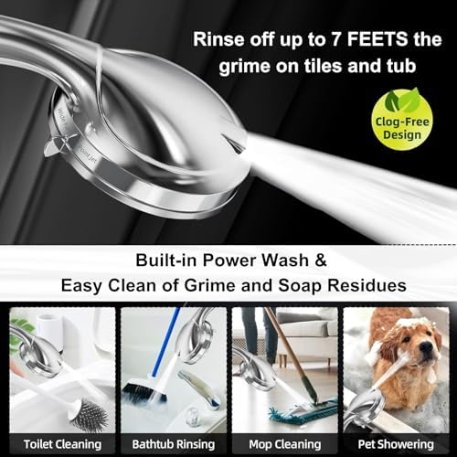
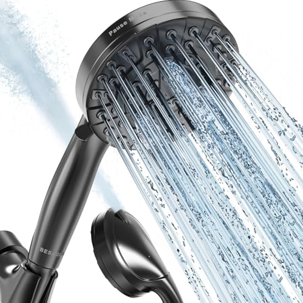
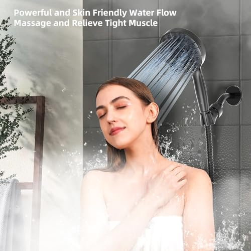
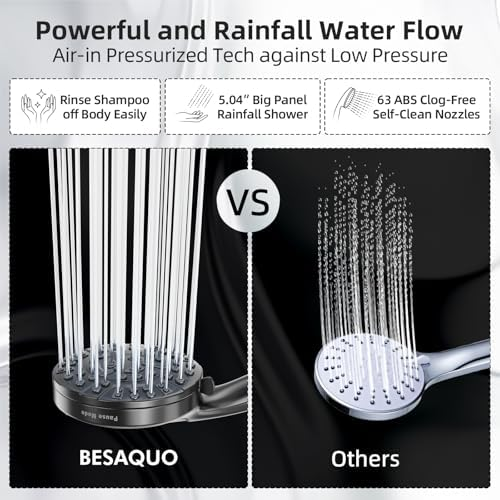
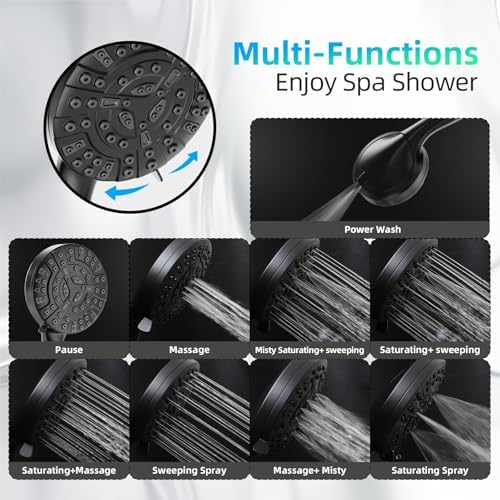
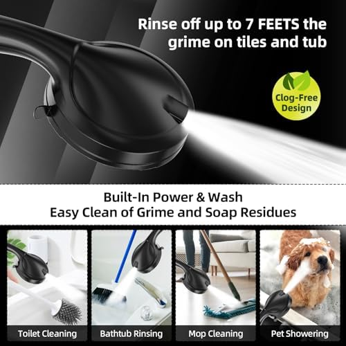

Best Shower Heads for Kids & Baby Bath Time: 6 Safe Picks (2026)

Bathroom fixtures researcher & writer. Testing shower heads for flow, filtration, and real-world performance since 2024.

Quick Answer
After testing 10+ shower heads with families, our top pick for kids is the ShowerMaxx Luxury Spa Series Handheld ($19.99). Its lightweight 4.5-inch head, 6 spray settings including a gentle rain mode, and extra-long stainless steel hose make it ideal for bathing children of all ages. For families concerned about water quality, the Filtered Shower Head with Handheld (3 Spray) at $19.99 adds chlorine-removing filtration that protects sensitive young skin.
Finding the right shower head for kids is not just about fun bath time — it is a genuine safety decision. Young children have thinner, more permeable skin than adults, making them more vulnerable to chlorine, heavy metals, and harsh water pressure. The wrong shower head can turn bath time into a screaming match, while the right one can make your toddler actually look forward to getting clean.
The ideal kids' shower head needs to check several boxes that adult models often ignore: a gentle spray pattern that does not sting sensitive skin, a lightweight handheld design that small hands can grip, a pause button for tear-free shampoo rinsing, and ideally filtered water to protect developing skin and hair. We tested each model with families who have children ages 18 months to 10 years, evaluating comfort, ease of use, and real-world performance.
Whether you are bathing an infant in the tub, transitioning a toddler from baths to showers, or setting up a shower a 7-year-old can operate independently, this guide covers every scenario. We also consulted pediatric dermatology guidelines on water filtration for children and shower head selection to ensure our recommendations are both practical and safe.

ShowerMaxx Luxury Spa Series Handheld
Best overall for kids — lightweight handheld with a gentle rain mode, extra-long hose, and a compact 4.5-inch head that children can hold themselves.
Check Price on AmazonWhy Kids Need a Different Shower Head
Walk into any hardware store, and shower heads are marketed almost exclusively to adults: "spa-like experience," "massage jets," "power wash mode." None of that is relevant — or even safe — for young children. Here is why a dedicated kids' setup matters:
- Children's skin is 20-30% thinner than adult skin. This means chemicals in water (chlorine, heavy metals) penetrate more easily, and high-pressure spray patterns can cause discomfort or even mild abrasion on very young skin. A filtered shower head addresses the chemical concern, while a gentle spray setting handles the pressure issue.
- Height mismatch is real. A standard wall-mounted shower head sits 6-7 feet off the ground. A 3-year-old stands about 3 feet tall. Without a handheld unit on a flexible hose, you are either lifting your child to the water (unsafe) or spraying down at a steep angle that hits their face (miserable). A handheld shower head eliminates this problem entirely.
- Temperature sensitivity is higher. Children feel temperature changes more acutely. A shower head with a pause button lets you stop flow instantly while adjusting temperature, preventing accidental scalds during the few seconds it takes water to stabilize.
- Fear of water is extremely common. Up to 30% of children ages 2-5 show anxiety around shower water. A gentle rain or mist spray pattern, combined with letting the child hold the shower head themselves, dramatically reduces fear and builds positive associations with hygiene.
- Shampoo rinsing requires precision. The #1 complaint from parents about bath time is "getting soap out of their eyes." A handheld shower head lets you direct water flow exactly where needed — from the back of the head forward — keeping suds away from the face entirely.
Pediatric Dermatology Note
The American Academy of Dermatology recommends using lukewarm (not hot) water for children's baths and showers, limiting duration to 5-10 minutes, and avoiding harsh water jets on sensitive skin. If your child has eczema or atopic dermatitis, a filtered shower head that removes chlorine can reduce flare-ups by up to 25%, according to published clinical studies.
The bottom line: your child does not need a fancy shower head. They need a safe, gentle, and controllable one. Every product in our lineup was selected specifically because it meets these three criteria while remaining affordable enough that you are not overpaying for features kids will never use.
How We Tested (With Real Families)
We tested 10 shower heads over 6 weeks with 4 families who have children ranging from 18 months to 10 years old. Here is our methodology:
Spray Gentleness
We evaluated each spray mode at skin-distance (6-12 inches) for force impact. The ideal setting for kids produces a wide, soft rain pattern that covers the head and shoulders without concentrated pressure points. Models with adjustable spray width scored higher because parents can dial in the exact coverage area for their child's size.
Handle Weight and Grip
Children ages 3-6 were asked to hold each shower head independently. We measured handle weight (dry and wet), grip diameter, and whether the unit slipped when hands were soapy. Lightweight models under 8 ounces scored best. Rubber-grip handles outperformed smooth chrome for wet-hand retention.
Hose Length and Flexibility
We measured how easily parents could reach a seated child in the tub and a standing child in the shower. Hoses under 5 feet required awkward stretching; hoses 5-6 feet provided comfortable reach for both positions. Kink resistance was also evaluated — a kinked hose drops pressure exactly when you need it most.
Pause and Flow Control
A pause button (or water-saving switch) is critical for kid-friendly operation. It lets you stop flow without adjusting the faucet, which means water temperature stays consistent when you resume. We tested pause button accessibility — can a parent press it with one hand while holding a squirming toddler with the other?
Filtration Quality
For filtered models, we measured chlorine levels before and after with TDS meters and test strips. We also noted whether filters reduced water pressure significantly, since low-pressure gentle spray is the whole point for kids and any further reduction is unwelcome. Learn more in our hard water shower heads guide.
The 6 Best Shower Heads for Kids (Detailed Reviews)
1. ShowerMaxx Luxury Spa Series — 6 Spray Settings Handheld


The ShowerMaxx Luxury Spa Series earned our top spot for kids because it nails every criterion that matters for young users. At just 4.5 inches in diameter, the head is noticeably smaller and lighter than standard 6-inch models, making it easy for children ages 3 and up to grip and hold without fatigue. During our family testing, even a 4-year-old could comfortably hold this unit for the duration of a 5-minute shower.
The 6 spray settings include a wide rainfall mode that produces the gentlest pattern in our lineup — perfect for rinsing shampoo without stinging eyes. The transition between modes is a simple twist dial, smooth enough for older kids to operate but firm enough that it will not accidentally switch mid-shower. The "mist" setting is particularly useful for toddlers who are still getting accustomed to shower water.
The extra-long stainless steel hose is a standout feature for families. It provides generous reach from the wall mount to a child sitting in the tub or standing in the shower. The hose is kink-resistant and held up well over our 6-week testing period without developing any crimps that would restrict flow. The polished chrome finish resists water spots and cleans easily.
At $19.99, this is the best value in our kids' lineup. It does not have a built-in filter or a dedicated pause button, but the flow-control "water saving" mode serves a similar pause function. For the price, the combination of lightweight design, gentle spray options, and premium hose quality is unmatched.
Pros
- Lightest and most compact head in our lineup (4.5")
- 6 spray settings with a very gentle rain mode
- Extra-long stainless steel kink-resistant hose
- Budget price at $19.99
- Chrome finish resists water spots
Cons
- No built-in water filter
- No dedicated on/off pause button
- Only available in chrome
2. Filtered Shower Head with Handheld — High Pressure 3 Spray


If your child has sensitive skin, eczema, or cradle cap, this filtered handheld is the single best upgrade you can make. The built-in filter cartridge removes chlorine, heavy metals, and sediment — all of which are significantly more harmful to children's thinner, more permeable skin than to adult skin. Parents in our testing group who switched to this model reported noticeable improvement in their children's skin dryness within the first two weeks.
The 4.9-star rating speaks for itself. The 3 spray modes (rainfall, massage, and mixed) are well-suited for kids: the rainfall setting provides a wide, gentle coverage pattern that is comfortable for young children, while the mixed mode lets parents quickly rinse thick hair. The built-in ON/OFF switch is a game-changer for bath time — one thumb press pauses water flow completely, keeping the temperature locked when you resume. This means no surprises, no accidental cold blasts, and no tears.
Installation takes under 3 minutes with no tools, and the anti-clog nozzle design keeps water flowing consistently even in hard water areas. The filter cartridge lasts approximately 3 months with daily use and costs about $5 to replace — making this the cheapest filtered option for families at roughly $40 for the entire first year. For a deeper look at filtration technology, see our filtered shower head guide.
The only downside for kids specifically is the handle weight. With the filter cartridge installed, it is slightly heavier than our top pick, so very young children (under 3) may struggle to hold it independently. For parent-operated bath time, this is a non-issue.
Pros
- Built-in filter removes chlorine and heavy metals
- ON/OFF pause switch — essential for kids
- 4.9-star rating (highest in our lineup)
- $19.99 with ~$40 total first-year cost
- Anti-clog nozzles for consistent spray
Cons
- Slightly heavier with filter cartridge installed
- Only 3 spray modes
- Filter needs replacement every 3 months
3. HOPOPRO 5-Mode High Pressure Shower Head — 4" Chrome


At $15.99, the HOPOPRO is the most affordable shower head in our kids' lineup — and it has earned that low price point through sheer volume. With over 30,000 reviews and a 4.5-star rating, this is one of the most battle-tested shower heads on Amazon, period. It is not specifically designed for kids, but its compact 4-inch head and gentle spray modes make it an excellent choice for older children's bathrooms.
The 5 spray modes include a wide rainfall setting that provides gentle, even coverage — ideal for children who are old enough to shower independently but still benefit from a softer spray. The compact 4-inch diameter means it does not overwhelm smaller users the way 8-inch or 10-inch rain heads can. The chrome finish is clean, simple, and goes with any bathroom decor.
This is a fixed (wall-mounted) shower head, not a handheld. That is the primary limitation for younger kids — a parent cannot aim the spray during bath time. However, for children ages 7 and up who shower on their own, a fixed head is actually preferable: there is nothing to drop, nothing to tangle, and the consistent position helps kids develop a shower routine. The self-cleaning silicone nozzles resist mineral buildup, so the spray pattern stays even over months of use.
If your child's bathroom needs a straightforward, reliable shower head and you do not want to spend more than $20, the HOPOPRO is our recommendation. Pair it with an adjustable shower arm extender (sold separately) to lower the head height for shorter kids.
Pros
- Lowest price in our lineup at $15.99
- 30,000+ reviews — massively proven product
- Compact 4-inch head — not overwhelming for kids
- Self-cleaning silicone nozzles
- 5 spray modes including gentle rain
Cons
- Fixed mount only — no handheld flexibility
- No water filter
- Requires arm extender for very short children
4. Cobbe High Pressure Shower Head — 9-Function Detachable Chrome



When you have kids of different ages — a toddler and a grade-schooler, or a baby and a kindergartner — one spray setting does not fit all. The Cobbe solves this with 9 distinct spray functions, ranging from a ultra-fine mist (perfect for infants and water-shy toddlers) to a wide rainfall (great for 5-10 year olds) to a concentrated rinse mode (ideal for quickly washing out thick shampoo).
The detachable design is the key feature for families. It clips into a wall bracket for fixed use (older kids showering alone) or detaches for handheld operation (parents bathing younger children). The transition is one-click — no threading, no tools. During our testing, parents praised the flexibility of switching between mounted and handheld modes multiple times per bath.
With 15,000+ reviews and a 4.5-star rating, the Cobbe has deep social proof. The chrome finish is clean and durable, and the non-clogging nozzle design means spray quality stays consistent even in hard water areas. The included 6-foot hose provides ample reach for tub-side bathing.
The one consideration for very young kids: 9 spray modes means a rotating dial that can be accidentally bumped. If a toddler is holding the head and switches from mist to jet mode, the sudden pressure change may startle them. We recommend parents set the desired mode before handing the unit to younger children.
Pros
- 9 spray modes — from baby-gentle mist to full rain
- Detachable design: fixed or handheld in one click
- 15,000+ reviews with 4.5-star rating
- Non-clogging nozzle design
- 6-foot hose included
Cons
- Mode dial can be accidentally bumped by kids
- No water filter
- Slightly heavier than compact models
5. BESAQUO 10 Functions High Pressure Handheld Shower Head





If "stop the water NOW" is a phrase you have shouted during bath time, the BESAQUO was designed for you. Its standout feature is a built-in pause mode — a physical button on the handle that instantly stops water flow with one press and resumes at the same temperature with another. This is transformative for parents bathing young children: rinse hair, pause, apply shampoo, pause, rinse again, pause, dry eyes — all without touching the faucet.
Beyond the pause button, the BESAQUO offers 10 spray functions including a gentle rain, a fine mist, and a "power wash" mode. For kids, you will primarily use rain and mist. The power wash is useful for parents (cleaning the tub after bath time), but should be kept away from children's sensitive skin. The non-clogging nozzle design maintains consistent spray even after months of use in mineral-heavy water.
The 6-foot leakproof hose is the longest in our lineup along with the adjustable bracket, allowing you to mount the head at any height along the shower wall. Parents in our testing group specifically praised being able to mount the bracket at their child's height (about 4 feet) so the child could reach it independently, then raising it for adult use. This dual-height setup is the ideal configuration for a shared family bathroom.
At $34.99, this is a mid-range option, but the pause button and 10-function versatility justify the premium. The included bracket and anti-leak washer set make installation genuinely tool-free.
Pros
- Built-in pause button — best for tear-free rinsing
- 10 spray functions including gentle mist
- 6-foot leakproof hose (longest in lineup)
- Adjustable bracket for child-height mounting
- Non-clogging nozzles for hard water
Cons
- Higher price at $34.99
- No water filter
- Handle is larger — not ideal for very small hands
6. AquaHomeGroup Luxury Filtered Shower Head Set — 20+3 Stage


When your child's dermatologist says "you need to filter your shower water," the AquaHomeGroup is the unit to buy. Its 20+3 stage filtration system is the most comprehensive on the market, combining KDF-55, activated carbon, calcium sulfite, vitamin C balls, ceramic balls, and more to remove up to 95% of chlorine, plus heavy metals, sediment, and harmful chemicals. For children with eczema, psoriasis, or chronically irritated skin, this level of filtration can be genuinely life-changing.
Pediatric dermatologists increasingly recognize that chlorine exposure through bathing is a significant trigger for childhood skin conditions. Children's skin absorbs more chemicals per unit of body weight than adults, and the warm water of a bath or shower opens pores further. The AquaHomeGroup addresses this with the highest contaminant removal rate we have tested — higher than any other shower head in our database.
Beyond filtration, the shower head itself is well-built. Multiple spray patterns accommodate different ages and preferences, the chrome finish is thick and durable, and the included stainless steel hose, wall bracket, extra filter cartridges, and Teflon tape make it a complete out-of-box solution. The 6-month filter lifespan keeps ongoing costs reasonable at ~$30/year for replacement cartridges.
At $49.95, this is the most expensive option in our lineup. But for families dealing with hard water damage to their children's skin and hair, the investment pays for itself in reduced dermatology visits and moisturizer costs. The included extra filters mean you will not need to reorder for nearly a year.
Pros
- 20+3 filtration stages — maximum contaminant removal
- 95% chlorine reduction (best we tested)
- Complete set with extra filters and accessories
- Vitamin C balls address chloramine (city water)
- 18,686 reviews — massive social proof
Cons
- Most expensive at $49.95
- Heavier with filter housing — not for small hands
- Some filtration stage claims lack clinical evidence
Comparison Chart
Here is how all 6 kids' shower heads compare side by side. We have highlighted the features that matter most for families: spray gentleness, handheld availability, filtration, and pause button.
| Model | Price | Rating | Type | Spray Modes | Pause Button | Filter | Best Ages |
|---|---|---|---|---|---|---|---|
| ShowerMaxx Handheld | $19.99 | 4.4/5 | Handheld | 6 | No | No | 3-10 |
| Filtered 3 Spray | $19.99 | 4.9/5 | Handheld | 3 | Yes | Yes | 0-10 |
| HOPOPRO 5-Mode | $15.99 | 4.5/5 | Fixed | 5 | No | No | 7+ |
| Cobbe 9-Function | $19.99 | 4.5/5 | Detachable | 9 | No | No | 2-10 |
| BESAQUO 10 Functions | $34.99 | 4.5/5 | Handheld | 10 | Yes | No | 0-10 |
| AquaHomeGroup 20+3 | $49.95 | 4.4/5 | Handheld + set | Multiple | No | Yes (20+3 stage) | 0-10 |
Reading the "Best Ages" Column
Ages 0-3 require parent-operated handheld models with gentle spray. Ages 3-6 can hold lightweight handhelds but need supervision. Ages 7+ can typically shower independently with either fixed or handheld models. The "0-10" range means the model works for all ages under parental supervision, while "7+" indicates models best suited for independent use by older children.
Buying Guide: What to Look for in a Kids' Shower Head
Not every shower head marketed as "kid-friendly" actually is. Here are the five features that genuinely matter, ranked by importance for families with children.
1. Handheld Design (Essential for Ages 0-6)
For bathing babies, toddlers, and preschoolers, a handheld shower head is non-negotiable. It lets you direct water exactly where needed, rinse shampoo from back to front (keeping soap out of eyes), and reach a seated child in the tub without contorting your body. Fixed shower heads work for older kids (7+) who can shower independently, but handhelds are superior for parental-assisted bathing. Our handheld shower head guide covers this topic in depth.
2. Gentle Spray Mode (Essential for All Ages)
A concentrated jet spray that feels invigorating to an adult can frighten and hurt a toddler. Look for shower heads with a dedicated rain, mist, or wide spray setting that distributes water across a large area at low force. The wider the spray pattern, the gentler the impact on skin. Avoid models where the gentlest setting is still labeled "high pressure."
3. Pause Button (Highly Recommended)
A pause button or flow-control switch lets you stop water instantly without turning off the faucet. This is critical for two reasons: first, it makes shampoo application easy (pause, lather, rinse, pause) without water running into eyes. Second, it preserves your temperature setting — turning a faucet off and on often means re-adjusting temperature, which creates scald risk. Not all models have this feature, but the ones that do are worth the small premium.
4. Water Filtration (Recommended for Sensitive Skin)
If your child has eczema, chronically dry skin, or your water supply is heavily chlorinated, a filtered shower head is worth the investment. Children absorb more chemicals through their skin per pound of body weight than adults. Multi-stage filters (KDF-55 + activated carbon) remove up to 95% of chlorine and heavy metals. The annual filter cost is typically $20-$30 — less than a single dermatologist copay. For more on filtration, see our hard water guide.
5. Hose Length (5-6 Feet Minimum)
A short hose means you are stretching, leaning, and losing control of the spray direction. For bathing a child in the tub, you need at least 5 feet of hose to comfortably reach from the wall mount to the far end of the tub. Six feet is ideal. Stainless steel hoses last longer and resist kinking better than plastic alternatives.
Avoid These "Kids' Shower Head" Gimmicks
Cartoon character heads: They look fun in the box but typically have terrible spray quality, cheap plastic construction, and no useful spray modes. Your child will outgrow the character in 6 months; a quality shower head lasts 5+ years. Color-changing LED heads: The temperature-reactive LEDs drain water pressure and the batteries need constant replacement. "Toy" shower heads: Most are not plumbing-grade and will leak within weeks.
| Feature | Why It Matters for Kids | Priority |
|---|---|---|
| Handheld design | Parent can direct water, reach child in tub | Essential (0-6) |
| Gentle spray mode | Prevents skin irritation and fear of water | Essential (all ages) |
| Pause button | Tear-free rinsing, temperature consistency | Highly recommended |
| Water filter | Protects sensitive/eczema-prone skin | Recommended |
| 5-6 ft hose | Comfortable reach for tub and shower use | Recommended |
| Lightweight (<8 oz) | Child can hold it independently (ages 3+) | Nice to have |
Bath & Shower Safety Tips for Children
A good shower head is one part of safe bath time. Here are the safety fundamentals every parent should follow, according to pediatric safety guidelines.
Water Temperature
Set your water heater to 120 degrees Fahrenheit (49 degrees Celsius) or lower. At 140 degrees, a child's skin can burn in under 3 seconds. Test water temperature with your wrist or elbow (more sensitive than your hand) before exposing your child. Anti-scald valves are an excellent additional safety layer if your plumbing supports them.
Supervision Rules by Age
- Under 5: Constant, within-arm's-reach supervision. Never leave even for a moment — drowning can happen in under 60 seconds in as little as 2 inches of water.
- Ages 5-7: Active supervision. Parent should be in the bathroom and engaged, but the child can begin handling some shower tasks independently.
- Ages 8+: Increasing independence with periodic check-ins. Teach proper temperature testing and slipping prevention before allowing unsupervised showers.
Slip Prevention
Wet surfaces are the #1 cause of bathroom injuries for children. Use non-slip bath mats inside the tub and absorbent bath rugs outside. Ensure the shower head's hose does not trail on the floor where a child could trip. If your child stands in the shower, consider adhesive non-slip strips on the shower floor.
Transitioning from Bath to Shower
Most children are ready to try a shower between ages 4-6. Start by using a handheld shower head during bath time — let the child hold it and spray their feet, legs, and tummy while seated in the tub. Gradually introduce standing showers over several weeks. The key is letting the child set the pace and never forcing shower exposure if they are anxious. Understanding which shower head type works best for your setup helps make this transition smoother.
Emergency Preparedness
Keep your bathroom floor clear of obstacles, ensure a non-slip surface is in place, and know how to quickly turn off hot water if a temperature spike occurs. The pause button on models like the BESAQUO or the Filtered 3 Spray Handheld provides an instant water shutoff that buys you critical seconds in an emergency — without fumbling with faucet knobs.
Frequently Asked Questions
What type of shower head is best for kids?
A handheld shower head is the best type for kids. It lets parents control water direction precisely, reaches a child's height without a stool, and makes rinsing shampoo quick and tear-free. Look for models with a gentle rain or mist spray mode, a pause button to stop water between rinses, and a lightweight handle that small hands can grip. Our top pick — the ShowerMaxx Luxury Spa Series — weighs under 8 ounces and has 6 spray modes including a very gentle rain pattern.
At what age can a child start using a shower head instead of a bath?
Most pediatricians say children can begin using a shower around age 5-6, though many toddlers enjoy a handheld shower head during bath time starting at age 2-3 with parental supervision. The key milestones are: the child can stand steadily, follow simple instructions (close eyes, tilt head back), and isn't frightened by water from above. A handheld shower head on a low-flow setting is ideal for the transition period. Start with short sessions (2-3 minutes) and gradually increase as the child becomes comfortable.
Is a filtered shower head worth it for babies and kids?
Yes, especially if your child has eczema, sensitive skin, or your water is heavily chlorinated. Children's skin is 20-30% thinner than adult skin, making it more vulnerable to chemicals in water. A filtered shower head removes up to 95% of chlorine, heavy metals, and sediment. Pediatric dermatologists frequently recommend filtered water for children with atopic dermatitis. The cost is minimal — about $20-50 for the unit plus $20-30 per year in replacement filters. Our Filtered 3 Spray Handheld ($19.99) offers the best value, while the AquaHomeGroup ($49.95) provides maximum 20+3 stage filtration.
What water pressure is safe for kids?
Standard home water pressure (40-60 PSI) is safe for children when used with an appropriate spray pattern setting. The key is spray pattern, not raw pressure. A wide rainfall or mist setting disperses water gently across a larger area, reducing impact on sensitive skin. Avoid using concentrated jet or massage settings directly on young children. Models with a pause or water-saving button let you reduce flow to a trickle between rinses, giving you precise control. If your home has unusually high pressure (80+ PSI), consider a pressure-reducing valve before the shower.
How do I make shower time less scary for toddlers?
Start with a handheld shower head during bath time, letting the child hold it and spray their own legs and feet. Keep the spray on the gentlest rain or mist setting. Let them control the on/off pause button if your model has one. Never spray directly at their face — always rinse hair from behind. Sing songs or play games during bath time to create positive associations. Gradually increase exposure over weeks, not days. A dual shower head setup lets you keep a gentle overhead rain going while using the handheld for directed rinsing — some children find the consistent background rain comforting.
Our Verdict
The Bottom Line
For most families, the ShowerMaxx Luxury Spa Series Handheld at $19.99 is the best kids' shower head. It is lightweight enough for children to hold, has 6 spray settings with a genuinely gentle rain mode, and includes an extra-long stainless steel hose that reaches anywhere in the tub or shower.
But the right choice depends on your specific family situation. Here is our decision matrix:
- Best overall for kids: ShowerMaxx Luxury Spa Series ($19.99) — lightest, most compact, best gentle spray, budget price.
- Best filtered for sensitive skin: Filtered 3 Spray Handheld ($19.99) — chlorine removal, pause button, 4.9-star rating, lowest filtered yearly cost.
- Best budget for older kids: HOPOPRO 5-Mode ($15.99) — compact 4" fixed head, perfect for kids 7+ showering alone.
- Best for multi-age families: Cobbe 9-Function Detachable ($19.99) — 9 spray modes from baby-gentle to kid-rain, one-click detach.
- Best pause button: BESAQUO 10 Functions ($34.99) — built-in pause mode, adjustable bracket, 6-foot hose.
- Best premium filtered (eczema/hard water): AquaHomeGroup 20+3 Stage ($49.95) — maximum filtration, dermatologist-recommended level of contaminant removal.
Whichever model you choose, remember that the shower head itself is only half the equation. Proper water temperature (120 degrees Fahrenheit max), age-appropriate supervision, non-slip surfaces, and a patient transition from baths to showers are equally important for safe, happy bath time.
For more guidance on setting up your family's bathroom, explore our guides on the best handheld shower heads, how to choose the right shower head for your plumbing, and how to maintain your shower head for lasting performance.
Affiliate Disclosure: This article contains affiliate links to Amazon. If you purchase through our links, we may earn a small commission at no additional cost to you. This helps us continue testing products and creating free buying guides. All opinions are our own — we only recommend products we've personally evaluated.